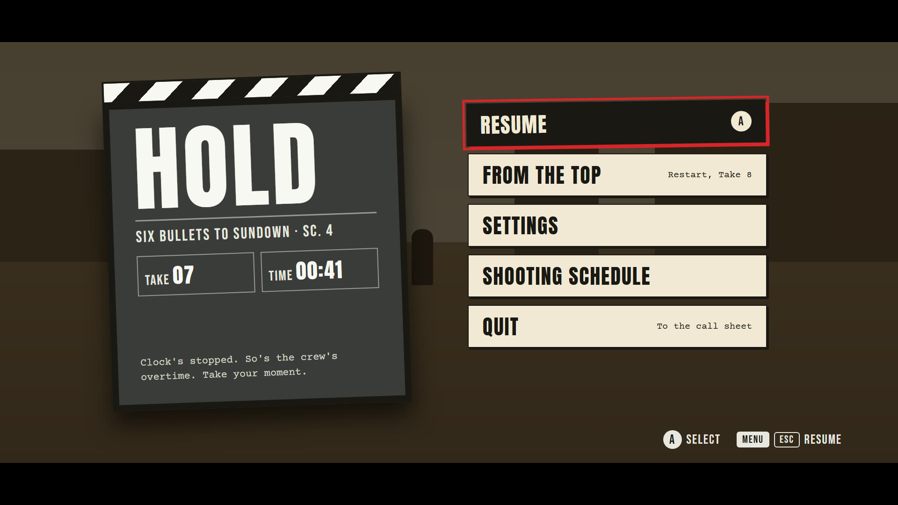
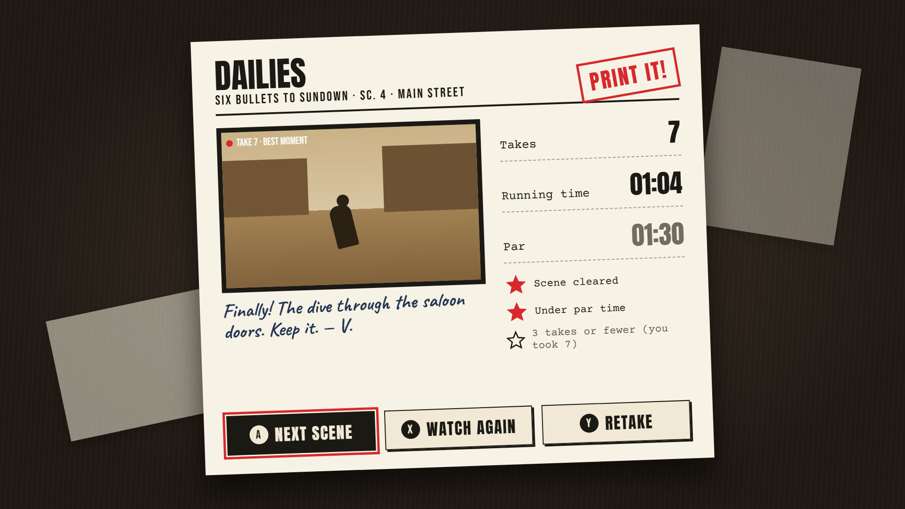
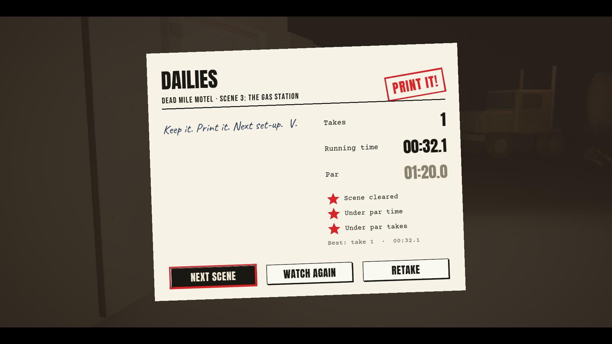
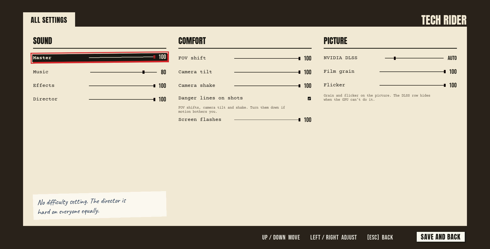

The menus, from the design boards to the build
On Thursday morning Claude Design drew the pause screen and the Dailies card as boards; by the 03:30 reel the UI session had built both, and a polish pass held every screen up against its board.
Day 1, Thu 12 NovHour 24

BeforeAfterOn Thursday morning the UI direction came from a set of Claude Design boards: a call-sheet menu, a HUD for each film, the slate, CUT!, the replay overlay, the Dailies card, and a pause screen called HOLD. Since then the UI session has been turning boards into widgets with kit scripts, one screen at a time.
Overnight it was moved up to Opus, and the Director gave it a polish task: every screen I'll see at 07:00, held up against its board, weakest first.


BeforeAfterThe settings screen had a board too, and Claude Design named it the Tech Rider, after the sheet a touring act sends to the venue. The settings sit in three columns, sound, comfort and picture, with a note in the Director's handwriting under them.

The pause card has its own copy too: "Clock's stopped. So's the crew's overtime. Take your moment."